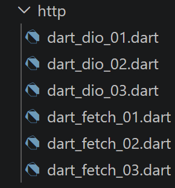

5. Les fonctions HTTP de Dart

5.1. Choix des outils HTTP
Contrairement à JavaScript/TypeScript, qui offre une fonction [fetch] NATIVE (dans le navigateur comme dans Node.js), Dart ne fournit PAS de client HTTP haut niveau dans sa bibliothèque standard ([dart:io] n'expose qu'un [HttpClient] bas niveau, pénible à utiliser directement). Deux paquets externes couvrent, ensemble, exactement le même terrain que [fetch] et [axios] dans le cours TypeScript :
- [package:http] (pub.dev/packages/http), maintenu par l'équipe Dart elle-même : une API simple et de bas niveau, sans configuration globale ni intercepteurs - le rôle de [fetch].
- [package:dio] (pub.dev/packages/dio) : configuration globale ([baseUrl], [timeout]), intercepteurs, gestion d'erreur enrichie ([DioException.response]) - le rôle d'[axios].
5.2. Le serveur de calcul de l'impôt
Tous les scripts de ce chapitre ciblent le serveur NestJS installé au chapitre précédent, à l'adresse [http://localhost:3000/main.php]. Avant de tester les scripts qui suivent, vérifiez que votre serveur NestJS est lancé et fonctionne. Pour qu’il fonctionne, l’outil Laragon doit être lancé également..
5.2.1. script [dart_fetch_01]
| // dart_fetch_01.dart
// Porte fetch-01.ts.
// Choix des outils HTTP en Dart : le paquet [http] (pub.dev/packages/http),
// maintenu par l'équipe Dart elle-même, joue le rôle du [fetch] natif de
// Node.js/du navigateur - une API simple et de bas niveau, sans
// configuration globale ni intercepteurs (contrairement au paquet [dio],
// qui joue lui le rôle d'[axios] - voir dart_dio_01.dart).
import 'dart:convert';
import 'package:http/http.dart' as http;
// URL de base du serveur de calcul de l'impôt (voir le chapitre
// "Installation d'un serveur NestJS")
const String baseUrl = 'http://localhost:3000/main.php';
// init session
Future<dynamic> initSession() async {
// [différence avec TypeScript] le paquet [http] n'a pas d'option
// [timeout] sur la requête elle-même : on limite la durée d'attente en
// enveloppant le Future avec l'extension [.timeout(...)] de dart:async,
// qui fonctionne sur N'IMPORTE QUEL Future (pas seulement les requêtes
// HTTP) - un mécanisme plus général que l'AbortSignal.timeout() de
// fetch, propre au fetch natif.
final uri = Uri.parse(baseUrl).replace(queryParameters: {
'action': 'init-session',
'type': 'json',
});
try {
// requête asynchrone - http.get() rend un Future<http.Response>
final stopwatch = Stopwatch()..start();
final response = await http.get(uri).timeout(const Duration(seconds: 2));
// [response] est l'ensemble de la réponse HTTP du serveur (entêtes
// HTTP + corps) - on l'affiche pour voir sa structure
print("réponse http en Dart (durée=${stopwatch.elapsedMilliseconds}ms) : "
"statusCode=${response.statusCode}");
// on peut accéder aux entêtes HTTP
print("entêtes de la réponse=${response.headers}");
// [différence avec TypeScript] contrairement à fetch, où response.json()
// est une méthode ASYNCHRONE à part (un nouveau Future), le corps de la
// réponse http.Response est déjà entièrement disponible de façon
// SYNCHRONE (response.body, une String) : http.get() a déjà attendu
// tout le corps avant de rendre son résultat. jsonDecode() n'est donc
// pas ici une opération asynchrone.
final objet = jsonDecode(response.body);
print("réponse json=$objet, type=${objet.runtimeType}");
return objet;
} catch (erreur) {
// on est là parce que le serveur a répondu avec un code d'erreur, ou
// parce que le client http a levé une exception (réseau inaccessible,
// délai dépassé...)
print("erreur fetch en Dart=${erreur.runtimeType}, $erreur");
// on relance l'erreur
rethrow;
}
}
// la fonction main exécute la fonction asynchrone [initSession]
Future<void> main() async {
try {
print("requête HTTP vers le serveur en cours "
"---------------------------------------------");
final response = await initSession();
print("succès ---------------------------------------------");
print("réponse=$response ${response.runtimeType}");
} catch (erreur) {
print("erreur ---------------------------------------------");
print("erreur=$erreur");
}
}
|
Commentons ce code :
- ligne 30 : [http.get(uri).timeout(const Duration(seconds: 2))] : le paquet [http] n'a pas d'option [timeout] sur la requête elle-même - on limite la durée d'attente en enveloppant le [Future] avec l'extension [.timeout(...)] de dart:async, qui fonctionne sur N'IMPORTE QUEL [Future], pas seulement les requêtes HTTP.
- ligne 43 : [jsonDecode(response.body)] : contrairement à [fetch], où [response.json()] est une méthode ASYNCHRONE à part, le corps d'une [http.Response] est déjà entièrement disponible de façon SYNCHRONE ([response.body], une [String]) : [http.get()] a déjà attendu tout le corps avant de rendre son résultat.
Le résultat de l’exécution est le suivant :
| requête HTTP vers le serveur en cours ---------------------------------------------
réponse http en Dart (durée=73ms) : statusCode=200
entêtes de la réponse={x-powered-by: Express, connection: keep-alive, keep-alive: timeout=5, set-cookie: connect.sid=s%3AWxLD5aAAWVIL6pinZyP75L4COQi837LW.NmwJehFDFeCvZ0p6CKHV9ybz9xNUvndTB7TYlKgp7s4; Path=/; HttpOnly; SameSite=Lax, date: Sun, 20 Sep 2026 09:47:30 GMT, content-length: 86, etag: W/"56-PDlegL2LInKrA6jh8Dg580wO7EQ", content-type: application/json; charset=utf-8}
réponse json={action: init-session, état: 700, réponse: session démarrée avec type [json]}, type=_Map<String, dynamic>
succès ---------------------------------------------
réponse={action: init-session, état: 700, réponse: session démarrée avec type [json]} _Map<String, dynamic>
|
5.2.2. script [dart_fetch_02]
| // dart_fetch_02.dart
// Porte fetch-02.ts : version "concise" de dart_fetch_01.dart, sans les
// affichages intermédiaires.
import 'dart:convert';
import 'package:http/http.dart' as http;
const String baseUrl = 'http://localhost:3000/main.php';
// init session
Future<dynamic> initSession() async {
final uri = Uri.parse(baseUrl).replace(queryParameters: {
'action': 'init-session',
'type': 'json',
});
final response = await http.get(uri).timeout(const Duration(seconds: 2));
// résultat reçu en jSON
return jsonDecode(response.body);
}
// la fonction main exécute la fonction asynchrone [initSession]
Future<void> main() async {
try {
print("requête HTTP vers le serveur en cours "
"---------------------------------------------");
final response = await initSession();
print("succès ---------------------------------------------");
print("réponse=$response");
} catch (erreur) {
print("erreur ---------------------------------------------");
print("erreur=$erreur");
}
}
|
Commentons ce code :
- Version concise de dart_fetch_01.dart, sans les affichages intermédiaires - la structure reste identique : construire l'[Uri], appeler [http.get], décoder le JSON.
Le résultat de l’exécution est le suivant :
| requête HTTP vers le serveur en cours ---------------------------------------------
succès ---------------------------------------------
réponse={action: init-session, état: 700, réponse: session démarrée avec type [json]}
|
5.2.3. script [dart_fetch_03]
| // dart_fetch_03.dart
// Porte fetch-03.ts : délai maximum et annulation manuelle d'une requête
// HTTP.
import 'package:http/http.dart' as http;
// URL de base du serveur de calcul de l'impôt (voir http/README, le
// serveur PHP historique du cours original ; ici on cible directement le
// serveur NestJS - voir le chapitre "Installation d'un serveur NestJS")
const String baseUrl = 'http://localhost:3000/main.php';
// exemple 1 : requête avec délai maximum, grâce à [.timeout(...)]
// (extension de dart:async sur tout Future - cf dart_fetch_01.dart)
Future<void> requeteAvecDelaiMaximum() async {
print("--- requête avec .timeout() ---");
try {
final response = await http
.get(Uri.parse('$baseUrl?action=init-session&type=json'))
// au-delà de 2 secondes, [.timeout] complète le Future en erreur
// avec une [TimeoutException] - l'équivalent Dart de
// l'AbortSignal.timeout() de fetch
.timeout(const Duration(seconds: 2));
print("réponse = ${response.body}");
} catch (erreur) {
// si le serveur n'existe pas (cas probable dans cet exercice), ou si
// le délai est dépassé, [erreur] est une [TimeoutException] ou une
// [SocketException]/[ClientException] selon le cas
print("erreur.runtimeType = ${erreur.runtimeType}, message = $erreur");
}
}
// exemple 2 : annulation manuelle d'une requête, par exemple parce que
// l'utilisateur a changé d'avis (ex : il retape dans un champ de
// recherche).
//
// [ATTENTION, différence de fond avec TypeScript] le paquet [http] n'a pas
// de signal d'annulation PAR REQUÊTE, comme l'AbortSignal de fetch : la
// seule façon d'annuler est de FERMER LE CLIENT (http.Client.close()) tout
// entier, ce qui annule TOUTES les requêtes en cours sur ce client - il
// faut donc créer un client DÉDIÉ à la requête qu'on veut pouvoir annuler
// individuellement, plutôt qu'un client partagé pour toute l'application.
Future<void> requeteAnnulableManuellement() async {
print("--- requête annulée manuellement ---");
final client = http.Client();
// on programme une annulation "métier" au bout de 10 ms (dans une vraie
// application, ce serait par exemple un clic sur un bouton "annuler")
Future.delayed(const Duration(milliseconds: 10), () {
print("annulation manuelle déclenchée");
client.close();
});
try {
final response = await client.get(Uri.parse('$baseUrl?action=init-session&type=json'));
print("réponse = ${response.body}");
} catch (erreur) {
// fermer le client pendant une requête en cours la fait échouer avec
// une [ClientException]
print("erreur.runtimeType = ${erreur.runtimeType}, message = $erreur");
}
}
Future<void> main() async {
await requeteAvecDelaiMaximum();
await requeteAnnulableManuellement();
}
|
Commentons ce code :
- ligne 21 : [.timeout(const Duration(seconds: 2))] complète le [Future] en erreur avec une [TimeoutException] au-delà du délai - l'équivalent Dart de [AbortSignal.timeout()] de [fetch].
- ligne 35 : [ATTENTION, différence de fond] le paquet [http] n'a PAS de signal d'annulation PAR REQUÊTE, comme l'[AbortController] de [fetch] : la seule façon d'annuler est de FERMER LE CLIENT ([http.Client.close()]) tout entier, ce qui annule TOUTES les requêtes en cours sur ce client - d'où la nécessité de créer un client DÉDIÉ à la requête qu'on veut pouvoir annuler individuellement.
Le résultat de l’exécution est le suivant :
| --- requête avec .timeout() ---
réponse = {"action":"init-session","état":700,"réponse":"session démarrée avec type [json]"}
--- requête annulée manuellement ---
réponse = {"action":"init-session","état":700,"réponse":"session démarrée avec type [json]"}
annulation manuelle déclenchée
|
5.2.4. script [dart_dio_01]
| // dart_dio_01.dart
// Porte axios-01.ts et axios-02.ts.
// Choix des outils HTTP en Dart : le paquet [dio] (pub.dev/packages/dio)
// joue le rôle d'[axios] - une configuration globale (baseUrl, timeout),
// des intercepteurs, une gestion d'erreur enrichie (error.response, comme
// axios) : tout ce que le paquet [http], plus proche de fetch, laisse à la
// charge du code appelant (cf dart_fetch_01.dart).
import 'package:dio/dio.dart';
// une instance Dio configurée une fois pour toutes, réutilisée par tous
// les appels - exactement le rôle de "axios.defaults" en TypeScript
final Dio dio = Dio(BaseOptions(
baseUrl: 'http://localhost:3000/',
connectTimeout: const Duration(seconds: 2),
receiveTimeout: const Duration(seconds: 2),
));
// init session
Future<dynamic> initSession({required String type}) async {
try {
// requête asynchrone - dio.get() accepte directement des
// queryParameters, comme axios.request({params: ...})
final response = await dio.get('main.php', queryParameters: {
'action': 'init-session',
'type': type,
});
// la réponse du serveur est dans [response.data] (déjà décodée en
// Map/List par Dio si le Content-Type est JSON), exactement comme
// response.data en axios
return response.data;
} on DioException catch (erreur) {
// le paramètre [erreur] est une [DioException] - on l'affiche pour
// voir sa structure (équivalent du "console.log(axios error)"
// commenté dans axios-01.ts)
if (erreur.response != null) {
// le serveur a signalé une erreur dans le statut HTTP mais il a
// aussi envoyé une réponse : elle est dans [erreur.response!.data],
// exactement comme [error.response.data] en axios
return erreur.response!.data;
} else {
// pas de réponse du tout (réseau inaccessible, timeout...) - on
// relance l'erreur
rethrow;
}
}
}
Future<void> main() async {
try {
// 1er essai, volontairement invalide (type='x' au lieu de 'json'),
// pour observer comment le serveur - puis dio - signalent l'erreur :
// le serveur répond quand même (avec un statut d'erreur métier), donc
// erreur.response.data est bien rempli, comme en axios-01.ts
print("requête HTTP (type invalide) vers le serveur en cours "
"---------------------------------------------");
final reponseInvalide = await initSession(type: 'x');
print("réponse=$reponseInvalide ${reponseInvalide.runtimeType}");
// 2ième essai, corrigé (type='json'), comme axios-02.ts
print("requête HTTP (type corrigé) vers le serveur en cours "
"---------------------------------------------");
final reponse = await initSession(type: 'json');
print("succès ---------------------------------------------");
print("réponse=$reponse ${reponse.runtimeType}");
} catch (erreur) {
print("erreur ---------------------------------------------");
print("erreur=$erreur");
}
}
|
Commentons ce code :
- lignes 12-15 : [Dio(BaseOptions(baseUrl: ..., connectTimeout: ..., receiveTimeout: ...))] : une instance [Dio] configurée une fois pour toutes, réutilisée par tous les appels - exactement le rôle de [axios.defaults] en TypeScript.
- [response.data] : la réponse du serveur, déjà DÉCODÉE en [Map]/[List] par Dio si le [Content-Type] est JSON, exactement comme [response.data] en axios.
- lignes 30-31 : [on DioException catch (erreur) { if (erreur.response != null) ... }] : la même distinction qu'[error.response] en axios entre une erreur AVEC réponse serveur (statut d'erreur métier) et une erreur SANS réponse (réseau inaccessible, timeout).
Le résultat de l’exécution est le suivant :
| requête HTTP (type invalide) vers le serveur en cours ---------------------------------------------
réponse={action: init-session, état: 703, réponse: paramètre type=[x] invalide} _Map<String, dynamic>
requête HTTP (type corrigé) vers le serveur en cours ---------------------------------------------
succès ---------------------------------------------
réponse={action: init-session, état: 700, réponse: session démarrée avec type [json]} _Map<String, dynamic>
|
5.2.5. script [dart_dio_02]
| // dart_dio_02.dart
// Porte axios-03.ts : enchaîner deux requêtes HTTP - init-session, puis
// authentifier-utilisateur (un POST avec un corps encodé en
// x-www-form-urlencoded).
import 'package:dio/dio.dart';
final Dio dio = Dio(BaseOptions(
baseUrl: 'http://localhost:3000/',
connectTimeout: const Duration(seconds: 2),
receiveTimeout: const Duration(seconds: 2),
));
Future<dynamic> initSession() async {
try {
final response = await dio.get('main.php', queryParameters: {
'action': 'init-session',
'type': 'json',
});
return response.data;
} on DioException catch (erreur) {
if (erreur.response != null) {
return erreur.response!.data;
}
rethrow;
}
}
Future<dynamic> authentifierUtilisateur(String user, String password) async {
try {
// requête POST avec un corps x-www-form-urlencoded - Dio encode
// automatiquement un Map en x-www-form-urlencoded si on précise le
// Content-Type dans les [Options], exactement comme qs.stringify(...)
// + le header manuel de axios-03.ts
final response = await dio.post(
'main.php',
queryParameters: {'action': 'authentifier-utilisateur'},
data: {'user': user, 'password': password},
options: Options(contentType: Headers.formUrlEncodedContentType),
);
return response.data;
} on DioException catch (erreur) {
if (erreur.response != null) {
return erreur.response!.data;
}
rethrow;
}
}
// la fonction main exécute les fonctions asynchrones une par une
Future<void> main() async {
try {
// init-session
print("action init-session en cours "
"---------------------------------------------");
final reponse1 = await initSession();
print("succès ---------------------------------------------");
print("réponse=$reponse1");
// authentifier-utilisateur - [NOTE, comme dans le cours TypeScript
// d'origine] cet appel repart d'une nouvelle requête HTTP, SANS
// partager automatiquement le cookie de session posé par le serveur à
// l'étape précédente (ni Dio, ni axios ne le font automatiquement côté
// Node/Dart) : le suivi manuel du cookie de session est justement le
// sujet de dart_dio_03.dart, qui porte axios-04.ts.
print("action authentifier-utilisateur en cours "
"---------------------------------------------");
final reponse2 = await authentifierUtilisateur('admin', 'admin');
print("succès ---------------------------------------------");
print("réponse=$reponse2");
} catch (erreur) {
print("erreur ---------------------------------------------");
print("erreur=$erreur");
}
}
|
Commentons ce code :
- ligne 38 : [Options(contentType: Headers.formUrlEncodedContentType)] : Dio encode automatiquement le [Map] passé à [data] en [x-www-form-urlencoded] dès que ce [Content-Type] est précisé - l'équivalent de [qs.stringify(...)] combiné à l'en-tête manuel d'axios.
- Cet appel repart d'une nouvelle requête HTTP SANS partager automatiquement le cookie de session posé par le serveur à l'étape précédente - ni Dio ni axios ne le font automatiquement côté Dart/Node : le suivi manuel du cookie est le sujet du script suivant.
Le résultat de l’exécution est le suivant :
| action init-session en cours ---------------------------------------------
succès ---------------------------------------------
réponse={action: init-session, état: 700, réponse: session démarrée avec type [json]}
action authentifier-utilisateur en cours ---------------------------------------------
succès ---------------------------------------------
réponse={action: authentifier-utilisateur, état: 103, réponse: [pas de session en cours. Commencer par action [init-session]]}
|
5.2.6. script [dart_dio_03]
| // dart_dio_03.dart
// Porte axios-04.ts : suivi manuel du cookie de session entre deux requêtes.
import 'package:dio/dio.dart';
final Dio dio = Dio(BaseOptions(
baseUrl: 'http://localhost:3000/',
connectTimeout: const Duration(seconds: 2),
receiveTimeout: const Duration(seconds: 2),
// on désactive la validation par défaut du statut HTTP pour pouvoir
// inspecter nous-mêmes une réponse d'erreur (comme error.response en
// axios), sans passer systématiquement par un bloc catch
validateStatus: (_) => true,
));
// cookie de session
const String sessionCookieName = "connect.sid";
String sessionCookie = '';
Future<dynamic> getRemoteData(String path, {
required String method,
Map<String, dynamic>? queryParameters,
Object? data,
Options? options,
}) async {
// pour le cookie de session - on l'ajoute nous-mêmes aux entêtes de
// chaque requête, exactement comme axios-04.ts
final opts = (options ?? Options(method: method)).copyWith(
method: method,
headers: {
...?options?.headers,
'Cookie': sessionCookie,
},
);
// exécution de la requête HTTP
final response = await dio.request(
path,
queryParameters: queryParameters,
data: data,
options: opts,
);
// on récupère le cookie de session s'il existe - response.headers est un
// objet [Headers] Dio (pas un simple Map comme response.headers en
// axios) ; response.headers['set-cookie'] rend une List<String>?
final setCookie = response.headers['set-cookie'];
if (setCookie != null) {
// on cherche le cookie de session dans cette liste
for (final entete in setCookie) {
final resultat = RegExp('^($sessionCookieName.+?);').firstMatch(entete);
if (resultat != null) {
// on mémorise le cookie de session
sessionCookie = resultat.group(1)!;
break;
}
}
}
// la réponse du serveur est dans [response.data]
return response.data;
}
Future<dynamic> initSession() {
return getRemoteData(
'main.php',
method: 'GET',
queryParameters: {'action': 'init-session', 'type': 'json'},
);
}
Future<dynamic> authentifierUtilisateur(String user, String password) {
return getRemoteData(
'main.php',
method: 'POST',
queryParameters: {'action': 'authentifier-utilisateur'},
data: {'user': user, 'password': password},
options: Options(contentType: Headers.formUrlEncodedContentType),
);
}
// la fonction main exécute les fonctions asynchrones une par une
Future<void> main() async {
try {
print("action init-session en cours ----------------");
final reponse1 = await initSession();
print("succès --------------------------");
print("réponse=$reponse1");
print("action authentifier-utilisateur en cours ---------");
final reponse2 = await authentifierUtilisateur('admin', 'admin');
print("succès -------------------");
print("réponse=$reponse2");
} catch (erreur) {
print("erreur ------------------");
print("erreur=$erreur");
}
}
|
Commentons ce code :
- ligne 12 : [validateStatus: (_) => true] : désactive la validation par défaut du statut HTTP, pour pouvoir inspecter soi-même une réponse d'erreur, sans passer systématiquement par un bloc [catch] - le même choix qu'axios-04.ts.
- [response.headers['set-cookie']] rend une [List<String>?] : contrairement à [response.headers] en axios (un simple objet), [response.headers] de Dio est un objet [Headers] dédié, dont l'indexation rend toujours une liste.
- ligne 48 : [RegExp('^($sessionCookieName.+?);').firstMatch(entete)] : le cookie de session est recherché et mémorisé à la main, puis réinjecté dans l'en-tête [Cookie] de chaque requête suivante - exactement le même idiome qu'axios-04.ts, adapté à l'API Dio.
Le résultat de l’exécution est le suivant :
| action init-session en cours ----------------
succès --------------------------
réponse={action: init-session, état: 700, réponse: session démarrée avec type [json]}
action authentifier-utilisateur en cours ---------
succès -------------------
réponse={action: authentifier-utilisateur, état: 200, réponse: Authentification réussie [admin, admin]}
|
5.2.7. Conclusion
[package:http] et [package:dio] couvrent, à eux deux, l'ensemble du terrain de [fetch] et [axios] : une API bas niveau proche du protocole, et une API riche avec configuration globale et gestion d'erreur enrichie. Les différences de détail ([timeout] générique par [Future] plutôt que par requête, absence d'annulation individuelle, absence de gestion automatique des cookies) se retrouveront, sous une forme concrète, dans les clients HTTP du chapitre suivant.